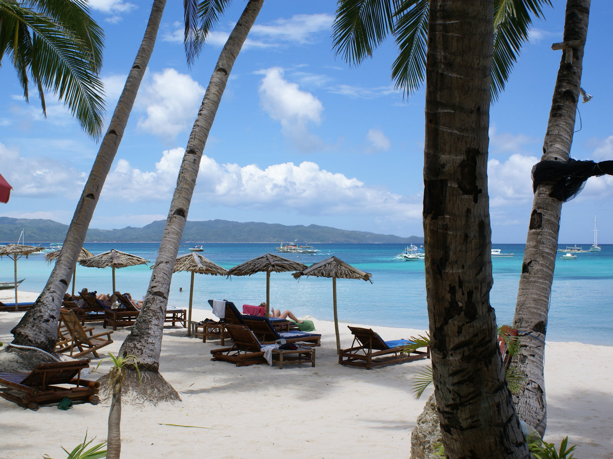
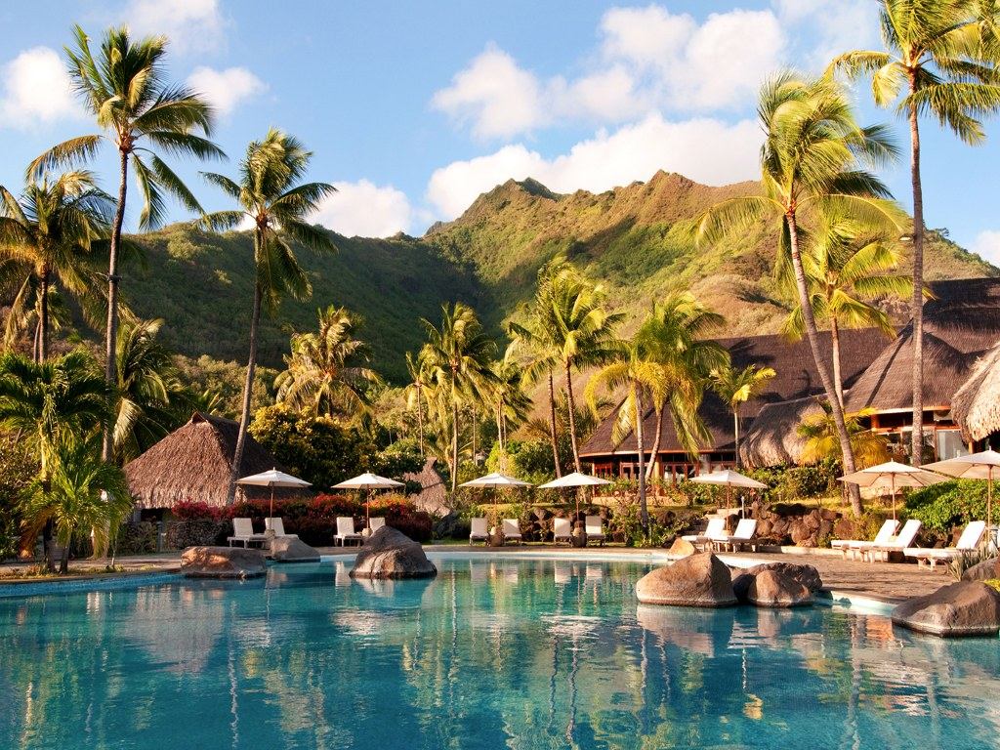

1 / 3

Indian Beaches
2 / 3

International Beaches
3 / 3

Beaches Resort
Candolim lies 15 kilometres from Panjim, the Goan capital, in northern Goa. Beginning at Fort Aguada and merging with Calangute Beach towards the end, it is one of the longest beaches in the state. The beach in itself is very calm and peaceful. What adds to the scenic beauty of the sand and sea are the scrub-covered dunes at the back of the beach, quite popular with tourists. A panoramic view of sunset at Candolim Beach in 2018. The main Candolim-Calangute Road is packed with shops and restaurants, but the beach front is rather free of any commercial activity apart from some water activities. The area around the beach can be termed as resort free as there aren't any resorts there. The beach has quite a number of inns at reasonable prices with good facilities. A fascinating feature about the Candolim Beach is the ship River Princess, which has been stuck at the shores of the beach since 2000 and ever since become quite a tourist attraction in itself.
Aksa Beach is a popular beach and a vacation spot in Aksa village at Malad, Mumbai, India. It is situated close to Malvani.[1][2] It is a popular weekend destination . It is dotted with many private cottages and hotels, some of which are rented out to tourists and visitors. This beach has INS Hamla (a base of the Indian Navy) at one end and a small beach called "Dana Paani". It is accessible from Malad (West) station by select BEST buses from Borivali railway station, en route to Madh Island, and also by private transport and auto rickshaws. The beach is approximately 9 km from Malad station and 12 km from Borivali. It can also be reached from Andheri (West) railway station. Buses from Andheri Station go to Versova Village. From there a boat takes passengers across the sea to Madh Island. On Madh Island bus numbers 269 and 271 go to Aksa Beach.
Dandi Beach is one of the prominent beaches located in Dandi village, Gujarat.[1] Dandi beach is one of the cleanest beaches in the Arabian Sea. Dandi Beach is historically prominent as Mahatma Gandhi led the salt sathyagraha from Sabarmati Ashram (Ahmedabad) to Dandi. This is the beach where Mahatma Gandhi broke the salt tax law of the British. Two monuments of Mahatma Gandhiji are placed in Dandi Beach to express the importance of Dandi Beach in the history of India. One monument is like the India gate commemorating the success of Gandhi breaking the salt law. The next monument is the statue of Gandhi holding the saline mud.